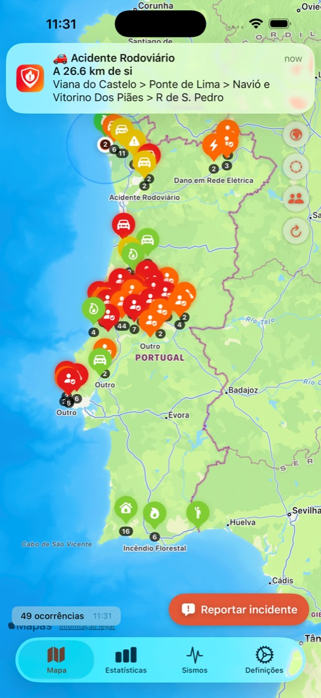
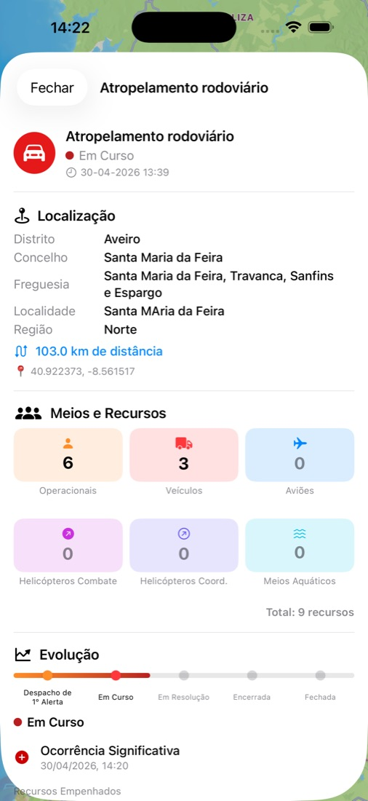

Avisos de proteção civil para a sua zona, no seu telemóvel.
Veja todas as ocorrências da ANEPC e os sismos do IPMA num mapa em tempo real. Quando surge algo novo perto de si, ou dos locais que lhe importam, a Alerta avisa-o de imediato.

- Passo 1
Defina a sua área
Um raio à volta de onde está, distritos inteiros, ou locais que escolher, como a casa dos seus pais.
- Passo 2
Escolha o que quer saber
Incêndios, acidentes, inundações, quedas de árvores, sismos acima de uma magnitude. Só o que lhe interessa.
- Passo 3
Receba o aviso
Uma notificação com o tipo de ocorrência, a distância a que está e o local exato.
O que encontra na app
Tudo o que a proteção civil publica, organizado para ser lido depressa, mesmo num momento de stress.

Cada ocorrência, em detalhe
Onde é, desde quando, em que estado está e quantos meios estão no local.
- Bombeiros, veículos e meios aéreos
- Cronologia desde o despacho
- Nível de gravidade e estado atual

O país em números
Ocorrências ativas, operacionais, veículos e meios aéreos em todo o país, com gráficos de 24 horas, 30 dias ou um ano, e por distrito.

Sismos
Dados oficiais do IPMA para o Continente, a Madeira e os Açores, e do USGS para o resto do mundo. Histórico de 24 horas, 7 ou 30 dias, e avisos só acima da magnitude que escolher.

Reporte o que vê
Árvore caída, estrada cortada, falta de luz: escolha o tipo, tire uma foto e envie. Os dados de localização da foto são removidos antes de publicar, e um operador revê cada reporte.
Inicie sessão com Apple ou Google, ou reporte de forma anónima.

De Civil a Mítico
Dez níveis de reputação. Cada reporte confirmado por um operador aumenta a sua confiança, e reportes inválidos baixam-na. Acompanhe os seus reportes e o progresso para o próximo nível.
Mais funcionalidades
Círculo de Segurança
Partilhe a sua posição com família e amigos, envie um SOS ou diga que está em segurança.
Meus Locais
Receba alertas para outros sítios além de onde está, como a casa dos pais ou a casa de férias.
Alertas por zona
Siga distritos inteiros ou comandos sub-regionais da ANEPC.
Grandes ocorrências
Um aviso nacional quando uma ocorrência mobiliza muitos meios. Pode desativá-lo.
Alertas que o acompanham
Opcional: a app atualiza a sua zona de alertas em segundo plano quando viaja, mesmo fechada.
Legenda do mapa
Todas as cores e símbolos explicados, e um olho nas ocorrências em vigilância.
De onde vêm os dados
Fontes públicas e oficiais, consultadas automaticamente.
Autoridade Nacional de Emergência e Proteção Civil. Ocorrências em todo o território, verificadas a cada 10 minutos.
Instituto Português do Mar e da Atmosfera. Sismos no Continente, na Madeira e nos Açores.
Serviço Geológico dos Estados Unidos. Sismos no resto do mundo.
Reportes de utilizadores, moderados por operadores e sempre assinalados como tal.
A Alerta é uma app informativa e não substitui os canais oficiais. Em caso de emergência, ligue 112.
Requisitos
- iOS 18.0 ou posterior
- iPadOS 18.0 ou posterior
- macOS 15.0 ou posterior
- Android 8.0 ou posterior
Suporte
Questões ou sugestões? Escreva para walter.tengler@gmail.com.
A Alerta usa dados oficiais da proteção civil portuguesa. A sua localização nunca sai do dispositivo sem o seu consentimento.